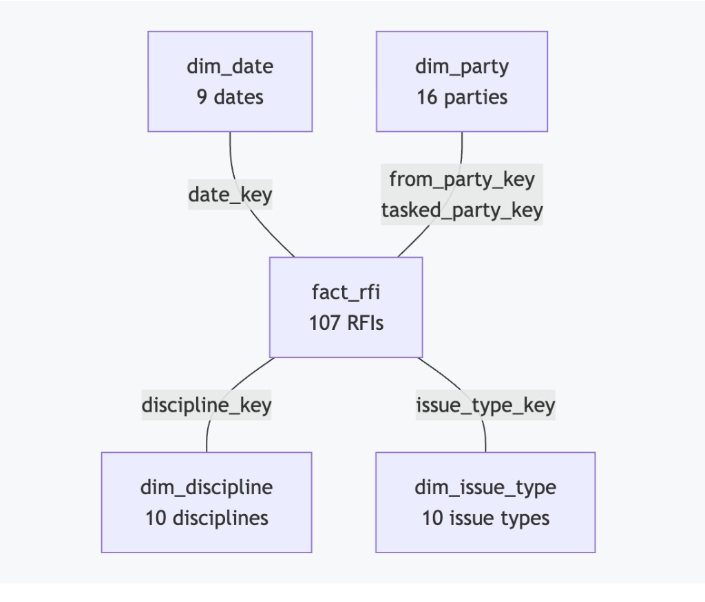
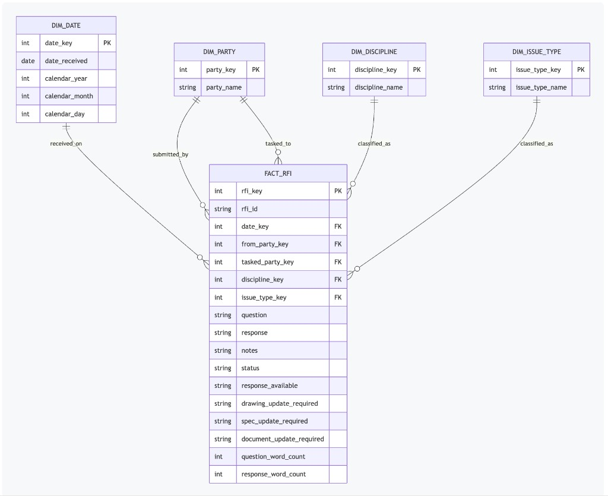

Section 1Database load
07_load_rfi_duckdb.py read data/processed/rfi_features.csv and ran sql/01_create_star_schema.sql. It wrote data/processed/rfi.duckdb. The feature CSV was not changed. A later run replaces that database file.
| Table | Rows | Grain |
|---|---|---|
| fact_rfi | 107 | One row per RFI, RFI-001 to RFI-107 |
| dim_date | 9 | One row per received date |
| dim_party | 16 | One row per party name |
| dim_discipline | 10 | One row per discipline |
| dim_issue_type | 10 | One row per issue type |
Section 2Quality checks
sql/02_quality_checks.sql wrote data/processed/validation/sql_quality_checks.csv. All 6 checks passed.
| Check | Result | Detail |
|---|---|---|
| fact_row_count | PASS | 107 rows |
| duplicate_rfi_id | PASS | 0 duplicated identifiers |
| rfi_id_sequence | PASS | RFI-001 to RFI-107 |
| missing_dimension_keys | PASS | 0 facts missing a dimension key |
| blank_question | PASS | 0 blank |
| invalid_status | PASS | 0 outside Answered and Open |
Section 3Dimensions
Received dates run from 1 September 2026 to 21 September 2026. Each date_key is the date written as YYYYMMDD.
| Date received | Date key |
|---|---|
| 2026-09-01 | 20260901 |
| 2026-09-02 | 20260902 |
| 2026-09-04 | 20260904 |
| 2026-09-10 | 20260910 |
| 2026-09-14 | 20260914 |
| 2026-09-15 | 20260915 |
| 2026-09-16 | 20260916 |
| 2026-09-17 | 20260917 |
| 2026-09-21 | 20260921 |
The 16 parties are the distinct submitting and tasked names together: AE, AE/JBMDL, AE/JBMDL/PM, AE/PM, CT, CT/PM, Carbon Recall Chattanooga, DAVID BOLAND, INC, Dobco, Inc., JBMDL, JBMDL/AE, PM, Richard Group LCC, Schweitzer Engineering Laboratories, Inc., USACE DB, and Willdan.
The 10 disciplines are Architectural, Civil, Controls / SCADA, Cybersecurity, Electrical, General, Mechanical, Other, Quality / Inspection, and Structural.
The 10 issue types are Compliance Requirement, Constructability, Design Clarification, Drawing Conflict, Inspection / Quality, Interface Coordination, Material Requirement, Missing Information, Scope Gap, and Specification Clarification.
Section 4Relationships
Each fact row points at exactly one date, one submitting party, one tasked party, one discipline, and one issue type. Submitting and tasked parties share dim_party.
| Fact column | Dimension | Meaning |
|---|---|---|
| date_key | dim_date | Date the RFI was received |
| from_party_key | dim_party | Party that submitted the RFI |
| tasked_party_key | dim_party | Party tasked to answer the RFI |
| discipline_key | dim_discipline | Derived engineering discipline |
| issue_type_key | dim_issue_type | Derived issue type |
Question, response, notes, status, document-update flags, and word counts stay on fact_rfi.
Section 5Diagrams

